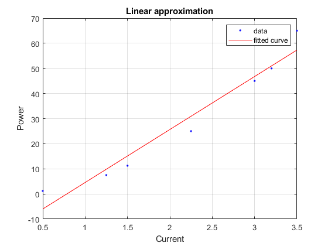
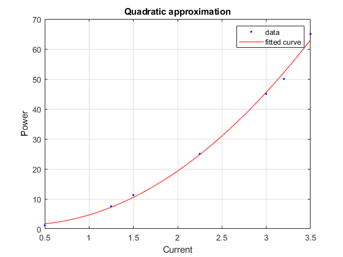
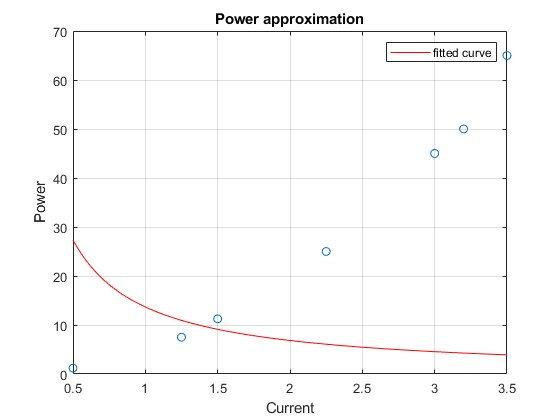
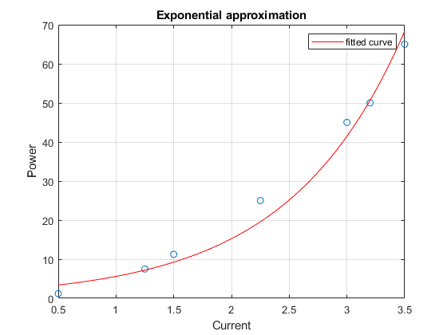
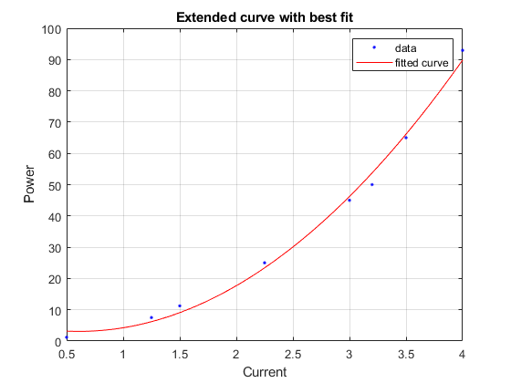

clc;
clear;
Current = [0.5 1.25 1.5 2.25 3.0 3.2 3.5]';
Power = [1.20 7.50 11.25 25.00 45.00 50.00 65.00]';
f_linear = fit(Current,Power,'poly1') ;
figure;
plot(f_linear,Current,Power);
title('Linear approximation');
xlabel('Current');
ylabel('Power');
grid;
f_quad =fit(Current,Power,'poly2');
figure;
plot(f_quad,Current,Power);
title('Quadratic approximation');
xlabel('Current');
ylabel('Power');
grid;
fo = fitoptions('Method','NonlinearLeastSquares',...
'Lower',[0,0],...
'Upper',[Inf,max(Current)],...
'StartPoint',[1]);
ft = fittype('a/(x^n)','problem','n','options',fo);
[curve2,~] = fit(Current,Power,ft,'problem',1);
figure;
plot(Current,Power,'o');
hold;
plot(curve2,'r')
title('Power approximation');
xlabel('Current');
ylabel('Power');
grid;
fo = fitoptions('Method','NonlinearLeastSquares',...
'Lower',[0,0],...
'Upper',[Inf,max(Current)],...
'StartPoint',[1]);
ft = fittype('a*exp(x^n)','problem','n','options',fo);
[curve2,gof2] = fit(Current,Power,ft,'problem',1);
figure;
plot(Current,Power,'o');
hold;
plot(curve2,'r')
title('Exponential approximation');
xlabel('Current');
ylabel('Power');
grid;
R = f_quad.p1;
i=4;
Current(length(Current)+1)=i;
Power(length(Power)+1) = i*i*R;
f_quad=fit(Current,Power,'poly2');
figure;
plot(f_quad,Current,Power);
title('Extended curve with best fit');
xlabel('Current');
ylabel('Power');
grid;
fprintf('The power for current of 4 amps is %d',Power(end))
Warning: Too many bounds. Length of upper and lower bounds is greater than the
number of coefficients. Ignoring extra bounds.
Current plot held
Warning: Too many bounds. Length of upper and lower bounds is greater than the
number of coefficients. Ignoring extra bounds.
Current plot held
The power for current of 4 amps is 9.293172e+01
    